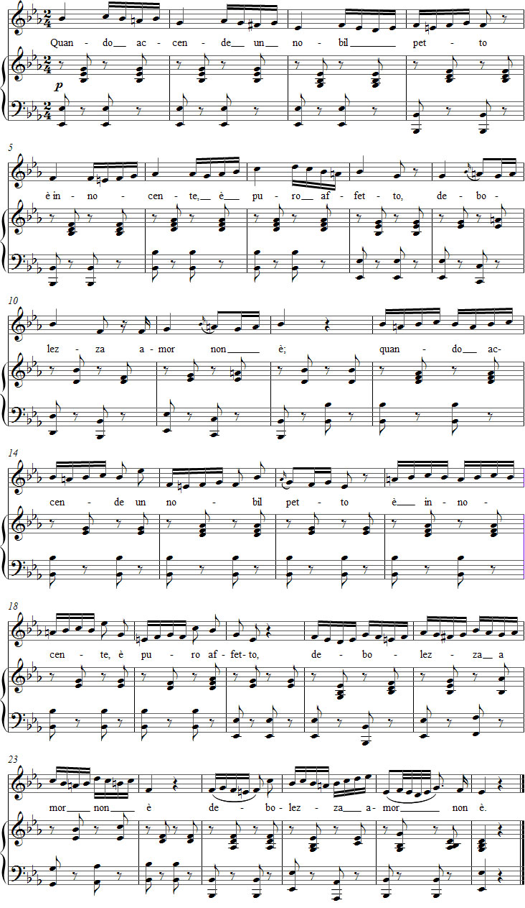

Vaccaj – Harjoitus 10a
Kuuntele äänite
Nuotit

Tehtävä 10a
Introduzione al gruppetto
Johdatus kaksoisheleeseen
hänen rakkautensa on viatonta,
on puhdasta, ei heikkoutta.
Esitysohjeet
Tässä tehtävässä harjoitellaan kaksoisheleitä (yhteensä 25 kertaa), jotka ovat painotettuja osuessaan painavalle tahdinosalle ja muualla ei-painotettuja. Tahdissa 27 tavataan vielä muunnelma, jossa heleet tulevat päänuottinsa jälkeen. Tämä koristetyyppi on varsinaisesti laulun 10b aihe.
Vaccaj kirjoitti kaksoisheleet valmiiksi kuudestoistaosiksi, mutta oppilas voi tutustua myös perinteiseen merkintätapaan, jossa korvataan nuottikuvan kuudestoistaosakuviot.
Tahdeissa 9, 11 ja 16 kuvion ensimmäinen ääni on painotukseltaan samanlainen kuin etuhelenuotti. Äänen tuottaminen tapahtuu tässä samalla tavalla kuin neljäksi kuudestoistaosaksi kirjoitetussa kuviossakin.
Iffert käsittelee kaksoisheleitä kolmen äänen koristeena, jossa äänet esiintyvät järjestyksessä: yläpuolinen sekunti – päänuotti – alapuolinen sekunti, tai päinvastoin. Korukuvion laajuus on yleensä pieni terssi ja se voidaan esittää useilla eri tavoilla. Esimerkiksi ylhäältä tuleva kuvio, jossa päänuotti on toinen ja neljäs ääni, esiintyy tahdeissa 1, 2, 3, 9, 11, 16, 21, 22 ja 23. Alhaalta tuleva kuvio löytyy tahdeista 17, 18 ja 19.
Kaksoisheleen muunnelma, jota voidaan kutsua myös ”rullaksi” tai ”kylteripytyksi” (nimitys tulee sotahistoriasta), esiintyy vanhassa musiikissa. Päänuotti tulee tässä variaatiossa ensimmäisenä ja kolmantena äänenä. Alaspäinen ”kylteripytty” löytyy tahdeista 4, 5, 6, 13, 14 ja 15. Ylöspäinen ”kylteripytty” esiintyy puolestaan tahdeissa 25 ja 26.
Metastasio ajatteli tämän runonsa alusta asti duetoksi. Siksi siinä on vain kolme riviä.
Ohjeita harjoitteluun
Kun opettelet tätä laulua, ota ensin esiin sen melodiarunko. Tässä valmis ehdotus:

Huomaat pian, että yksitoikkoinen ja kulmikas melodia kaipaa koristelua. Voit kokeilla lisätä improvisoiden gruppetto-korukuvioita.
Vaccajn kirjoittamaa melodiaa pitää aluksi laulaa pelkästään yhdellä tai useammalla vokaalilla. Artikuloinnin pitää olla kevyttä, mutta ensimmäistä ääntä pitää sekä pitkittää että painottaa, lukuun ottamatta tahteja 5 ja 6, joissa kaksoisheleen ensimmäinen kuudestoistaosa on sama kuin sitä edeltänyt ääni.
Kun harjoittelet hitaasti ja ajatuksella, huomaat nuotinnuksen arvon. Myös pelkkää tekstiä kannattaa lukea rauhallisessa tempossa. Lisää vähitellen nopeutta ja laula melodiaa tekstin kanssa sekä ilman. Joudut samalla kohottamaan artikulointienergiaa kaksoisheleessä.
Ajatuksia tulkinnasta
Melodiarunko sopii tekstiin suhteellisen hyvin ja vaatii sovittelua ykkösillä vain tahdeissa 5, 9, 17, 21 ja 25. Mahdottomalta tuntuu puolestaan yritys antaa jokaisen kaksoishelekuvion ensimmäiselle äänelle aksentti ja samanaikaisesti toteuttaa luontevaa sanapainotusta. On luultavasti viisainta pitää rytmistä vireyttä yllä tekstin prosodian kustannuksella.
Sana accende saattoi inspiroida Vaccajta valitsemaan juuri tämän tekstin valmistavaan kaksoisheleharjoitukseen. Koristelu voi huhun mukaan saada päänuotin syttymään liekkeihin.
Tempon valinnassa kannattaa olla maltillinen. Hitaammin laulettaessa ehtii ilmaista kuudestoistaosat intensiivisemmin. Allegrossa laulusta tulee helposti mitäänsanomaton.
Forshufvud, G. 1994. Con lieve fiato. Lärarhandledning till Nicola Vaccajs Metodo pratico. Göteborgs universitetet.